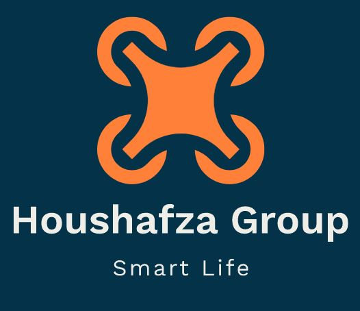
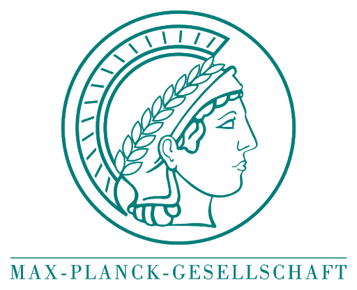

About Me
I am an M.A.Sc. student studying Electrical Engineering at the University of Toronto. Currently, I am working as a Graduate Research Assistant at the Laboratory for Advanced Power Conversion and Systems Analysis, University of Toronto on "On-board DC Charging Systems for Electric Vehicles", and as a teacher assistant of several courses at the UofT.
My primary area of research is Power Electronics and Electric Vehicles Charging Systems, from Simulation and Modeling to Circuit Design. I am also highly interested in Smart Grid and Renewable Energy.My Curriculum Vitae (PDF)
Experience
Graduate Research Assistant - 2021-present
Laboratory for Advanced Power Conversion and Systems Analysis, University of Toronto
Research on On-board DC Charging Systems for Electric Vehicles
Supervisor: Prof. P. Lehn
 Research Assistant - 2019-2021
Research Assistant - 2019-2021
Electrical Machines and Smart Micro-Grid Laboratory, University of Tehran
Implementation of a Wireless Network Infrastructure of Micro-grids and Meters
Supervisor: Dr. M. Abedini
 Research Intern - Summer 2020
Research Intern - Summer 2020
Electrical Machines and Smart Micro-Grid Laboratory, University of Tehran
Micro-Grid Wireless Network Management Software
Supervisor: Dr. M. Abedini

Team Leader - 2017-present
Houshafza IoT Group, University of Tehran
Implemented some educational IoT-related project
Education
 M.A.Sc., Electrical Engineering (2021-present)
M.A.Sc., Electrical Engineering (2021-present)
University of Toronto, Canada
 B.Sc., Electrical Engineering (2017-2021)
B.Sc., Electrical Engineering (2017-2021)
University of Tehran, Iran
GPA: 17.91/20 Equivalent to 3.87/4
Thesis:Automation System for Monitoring and Measuring Decentralized Solar Power Plants
Diploma in Math and Physics (2013-2017)
Shahid Beheshti High School,
National Organization for Development of Exceptional Talent
Andimeshk, Iran
GPA: 19.91/20 Equivalent to 4.0/4
Honors and Awards
 Eligible for Exemption from M.Sc Entrance Exam in University of Tehran as
an exceptionally talented student. Oct. 2020
Eligible for Exemption from M.Sc Entrance Exam in University of Tehran as
an exceptionally talented student. Oct. 2020
University of Tehran, Iran
Awarded Paid Internship offer by Max Planck Institute, Germany (Canceled due
to Covid-19 Pandemic). June 2020
Stuttgart, Germany
Supervisor: Dr. Katherine J. Kuchenbecker
Awarded Member of National Elites Foundation, Iran. 2017-2020
 Support Foundation of University of Tehran Grant. 2017-2020
Support Foundation of University of Tehran Grant. 2017-2020
For outstanding academic performance
Publications
Journal Papers
-
Smart Microgrid Educational Laboratory: An Integrated-Electric and Communications Infrastructures Platform
M. Abedini, T. Vahabzadeh, S. Ahmadi, M. Karimi, H. Manoochehri, A. Nazeri, M. Karami, M. Arani, F. Aminifar, M. Sanaye-Pasand
Scientia Iranica, July 2020
Skills
-
Simulation
MATLAB and SIMULINK, PLECS, PSCAD, NI Multisim, PSPICE,
Proteus, Altium Designer, ADS, HFSS -
Programming Languages
Highly skilled in Python, C, R. (GitHub page) -
FPGA
Verilog, Modelsim, Quartus, Nios II Processor -
Hardware
ARM/AVR Microcontrollers, Zigbee, Raspberry Pi, Arduino -
General
Windows and Linux(Ubuntu), LATEX
Notable Projects
Smart Automation System for Measuring Decentralized Solar Power Plants
-
Implementation of a Smart Automation System for Real-time monitoring and measuring Solar Power Plants. This wireless system provides Smart fault detection, Data-driven Analysis, etc.
Abstract: Large-scale solar power plants use a large number of dc to ac inverters to convert and distribute input power, which is eventually aggregated and transferred to the national grid. Online and Real-Time monitoring of all inverters in decentralized power plants is very vital to ensure the correct operation, in this regard, detecting possible faults using modern artificial intelligence methods and designing a monitoring system with a suitable graphical interface and in accordance with the needs of power plants has a significant impact on improving monitoring and increasing the efficiency of these power plants.
In the solar power plant intelligent monitoring system, the data are received from the power plant component sensors, which is sent through data exchange modules, for accurate, safe and secure monitoring and using a graphical interface and a combination of state-of-art artificial intelligence methods to detect possible faults are provided to the user. More details are available on my GitHub page


-
Implemented a network of PowerGrids connected to digital electricity meters, which transmit data of Micro-grids , based on Wireless Communication and Zigbee network
Abstract: Microgrids as the local area power systems are changing the power system landscape due to their potential of offering a viable solution for integrating renewable energy resources into the main grid. From the operational point of view, microgrids should have the appropriate power electronic interfaces, control schemes, as well as monitoring and automation infrastructures to provide the required flexibility.
In this project we provide Monitoring, control, and automation in smart networks of Micro-Grids.


MicroGrid Wireless Network Infrastructure


Speech Alarm System for Preventing Noise Pollution of Vehicles in Silence Zones
-
This project is aimed to prevent noise pollution in silence zones (i.e hospitals, tunnels, avalanche areas). the designed system would let drivers know vocally wherever they reach silence zones in order to not use horns. Moreover, the system would allow to disable horns of cars automatically.
This system is based on Wireless Communication and RF modules with a frequency of 915 MHz.
followings are the designed and implemented Transmitter and Receiver
Selected Course Projects
-
Non-Inverting Buck Boost Converter with Controller
Implementation and Simulation of a Non-Inverting Buck Boost (NIBB) Converter in closed-loop with a Type III analog compensator.
Course: Power Electronics, University of Toronto -
Boost DC-DC Converter
Simulation and Implementation of adjustable DC-DC Boost Converter.
Course: Electronics II, University of Tehran -
My Shazam - Music Search Engine
Developing a Music Search Engine in MATLAB using Signal Processing Algorithms, Fourier Transform, Signal Spectrum, Digital Filters, etc. Written in MATLAB. Codes available on my GitHub page
Course: Signals and Systems, University of Tehran -
Voice FIR-Filtering on FPGA
Used NIOS and Implemented PS2 mouse driver, voice recorder and FIR filtering, Programmed the system on the Altera DE2 board. Written in Verilog and C.
Course: FPGA-based Embedded System Design, University of Tehran

-
Implementation of pipelined MIPS on Altera DE1 FPGA
MIPS is a reduced instruction set computer and this project was implemented using a given list of intruction sets and a general pipeline structure. It is written in Verilog, simulated in ModelSim and programmed on the FPGA with Quartus. Debugging was done using the SignalTap tool in Quartus. Uses on-board SRAM module. Codes available on my GitHub page
Course: Computer Architecture Lab, University of Tehran

{kind=link}
{kind=link}
{kind=link}
{kind=link}
{kind=link}
{kind=link}
{kind=link}
{kind=link}
{kind=link}
{kind=link}
Also, other Projects are available on my GitHub page
Teaching Experiences
| Teaching Assistantship | |||||||||||
|
: Holding Extra-Curricular Classes
Fall 2021Fall 2020Spring 2020Fall 2019Spring 2019Fall 2019 |
|||||||||||
| Instructor | |||||||||||
Spring 2019Fall 2018 |
Certifications
CompTIA Certified Network+, by Kahkeshan Noor Inc, August 2019
Fundamental in MATLAB, by IEEE Student Branch, University of Tehran, Summmer 2017
 Teaching Assistant Training Workshop, by University of Tehran, Fall 2018
Teaching Assistant Training Workshop, by University of Tehran, Fall 2018